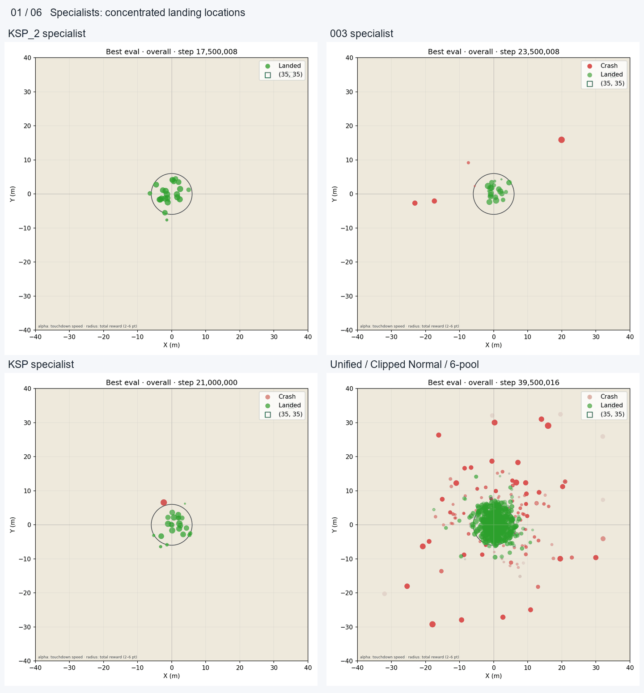
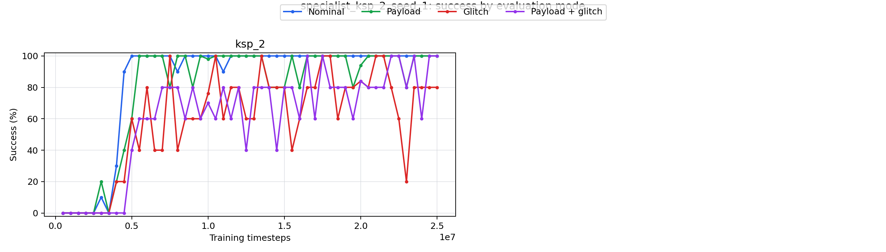
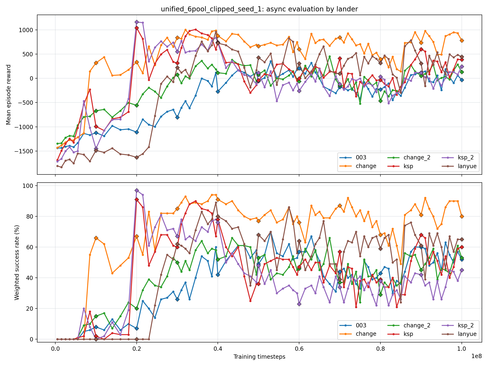

Simulation & modeling
Modular spacecraft assembly, geometric and physical properties, processed lunar terrain, engine-force simulation, and landing-contact conditions.
Planetary landing · Reinforcement learning
A modular 3D lunar simulator and an ongoing investigation into autonomous control across landers with diverse physical properties and propulsion layouts.
Four selected successful episodes, synchronized at simulation start. KSP_2, KSP, 003, and Change_2 each use a separate specialist controller—not one shared policy. Panels freeze at episode end.
I developed a PyBullet-based lunar-landing environment and modeled spacecraft with different masses, geometries, landing gear, engine counts, and thrust layouts. The environment supports both learned control and manual flight.

Specialist policies can learn effective simulated landings. The harder question is whether a single controller can handle spacecraft whose dynamics and actuation layouts differ substantially.
Modular spacecraft assembly, geometric and physical properties, processed lunar terrain, engine-force simulation, and landing-contact conditions.
Reinforcement-learning throttle control and attention-based representations of engine geometry and physics. Shared control and bounded-action distributions remain active research topics.
Asynchronous evaluation, touchdown conditions, positional accuracy, and sensitivity to payload variations and engine perturbations, with recorded histories and visualizations.
Recorded evaluation maps show concentrated landings alongside failure cases. These selected historical examples reveal both progress and limitations; they do not establish aggregate reliability.

Shared control has worked for similar landers, while larger differences between configurations remain challenging. The historical plots below are selected single-seed runs—not multi-seed averages or controlled comparisons.



These runs use different configuration pools and experimental settings. They are not a controlled head-to-head comparison of action distributions. Small and large evaluation batches also differ in sample count.
This page presents my work in environment development, spacecraft modeling, controller training, and experimental visualization. Detailed comparative studies and generalization experiments are ongoing.
Research source code, model weights, datasets, training configurations, and underlying numerical records are withheld while the work is being prepared for publication. This is a visual portfolio, not a runnable software release.